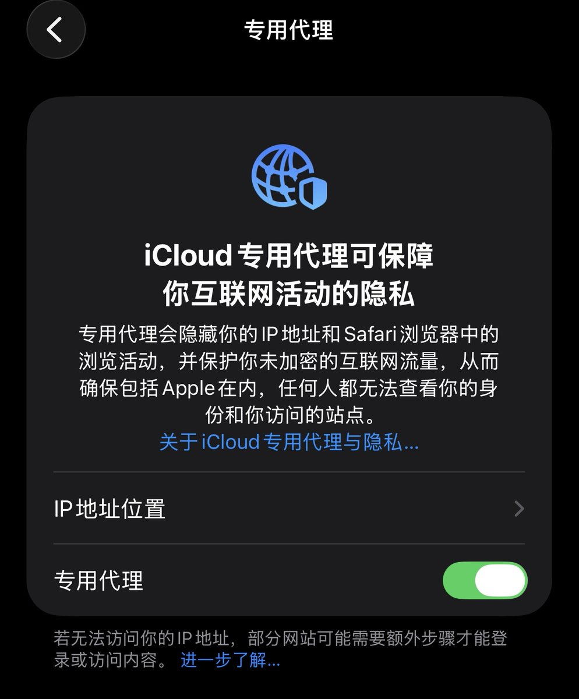
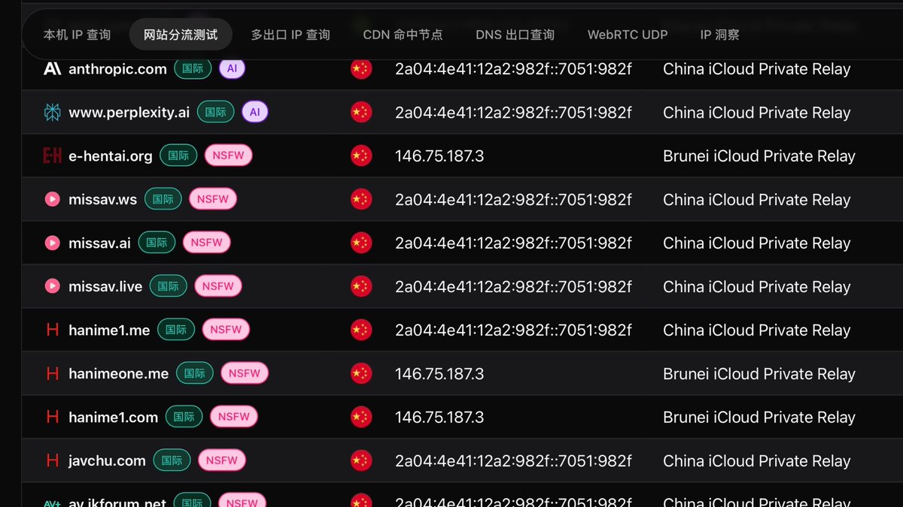

苹果用户可以试试，需要外区的iCloud+才有的功能
不只是Cloudflare WARP 还有Fastly、Akamai的节点，连接成功率会比使用CF的 1.1.1.1 快很多
不过在连公共WiFi如有Web认证（Captive Portal）要先关掉这个功能，通过后再启用，不然会导致无法联网
我就是之前一直想，MacBook连了酒店的WiFi一直不跳Portal，排查了一圈发现是这个功能挂着全局哈哈哈

不只是Cloudflare WARP 还有Fastly、Akamai的节点，连接成功率会比使用CF的 1.1.1.1 快很多
不过在连公共WiFi如有Web认证（Captive Portal）要先关掉这个功能，通过后再启用，不然会导致无法联网
我就是之前一直想，MacBook连了酒店的WiFi一直不跳Portal，排查了一圈发现是这个功能挂着全局哈哈哈


使用iCloud专用代理上X的方法。
前提：iPhone手机，外区iCloud+
使用方法：
1.关闭iPhone定位，
2.使用任意非中国IP（我测试是拿非大陆手机卡最保险），多关闭打开几次iCloud专用代理就可以了。使用Safari就是经过代理，可正常访问X。IP质量很高，而且会每10分钟跳一次，虽然是中国ip但也可以访问X
3. https://t.co/NQzgc7xSAf
前提：iPhone手机，外区iCloud+
使用方法：
1.关闭iPhone定位，
2.使用任意非中国IP（我测试是拿非大陆手机卡最保险），多关闭打开几次iCloud专用代理就可以了。使用Safari就是经过代理，可正常访问X。IP质量很高，而且会每10分钟跳一次，虽然是中国ip但也可以访问X
3. https://t.co/NQzgc7xSAf